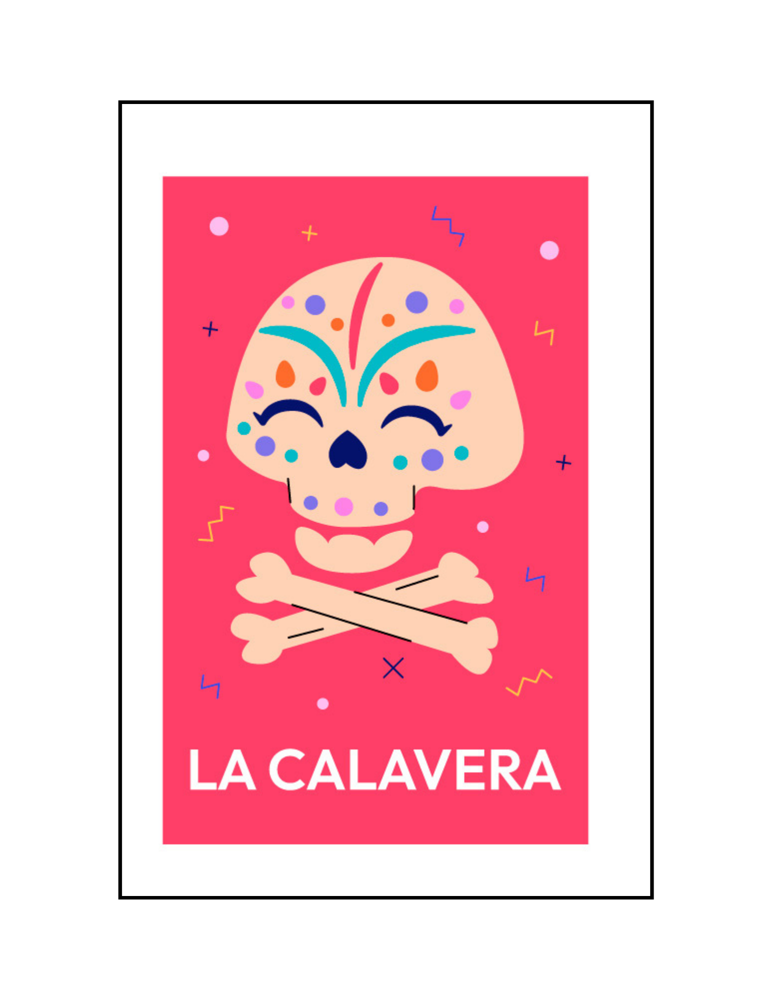

|

LA CALAVERA
|
'como una dolorida queja a las piedras arranca, hay, en el fondo, escondida una calavera blanca.'
The skeleton stays intact, the bones, the color and all of it, but the escence of the soul that once habitate it, its gone, leaving shadows where warmth once lit. A silent sentinel in the moon’s soft glow, Each hollow eye socket, a tale of woe. Ribs like arches, a bridge to the past, Where laughter echoed, and moments were cast. In the stillness, it stands as a ghost, A relic of dreams, a whispering host. Once filled with passion, now merely a shell, A story untold, a heart's final swell.The marrow once pulsed with life’s sweet embrace, Now dust settles softly in this lonely space. Fingers that once danced to the rhythm of time, Now grasp at memories, like shadows that climb. What songs did it sing in the light of the day? What hopes did it cradle, now faded away? In the quiet of night, can you hear the sighs, Of a life that once flourished, now lost in the skies?